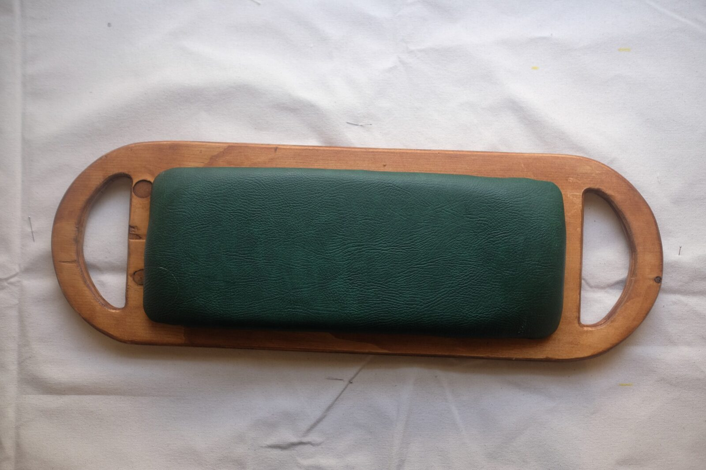
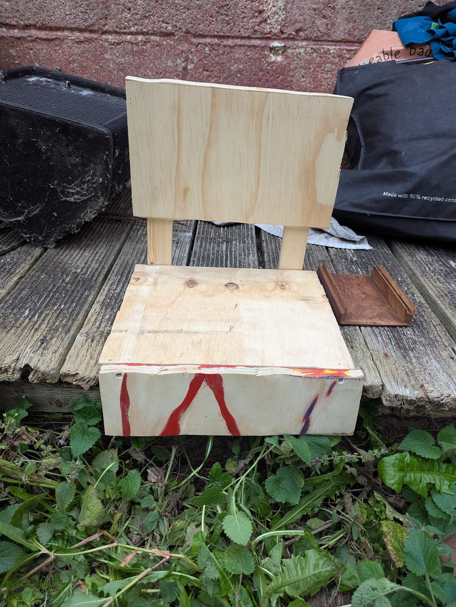
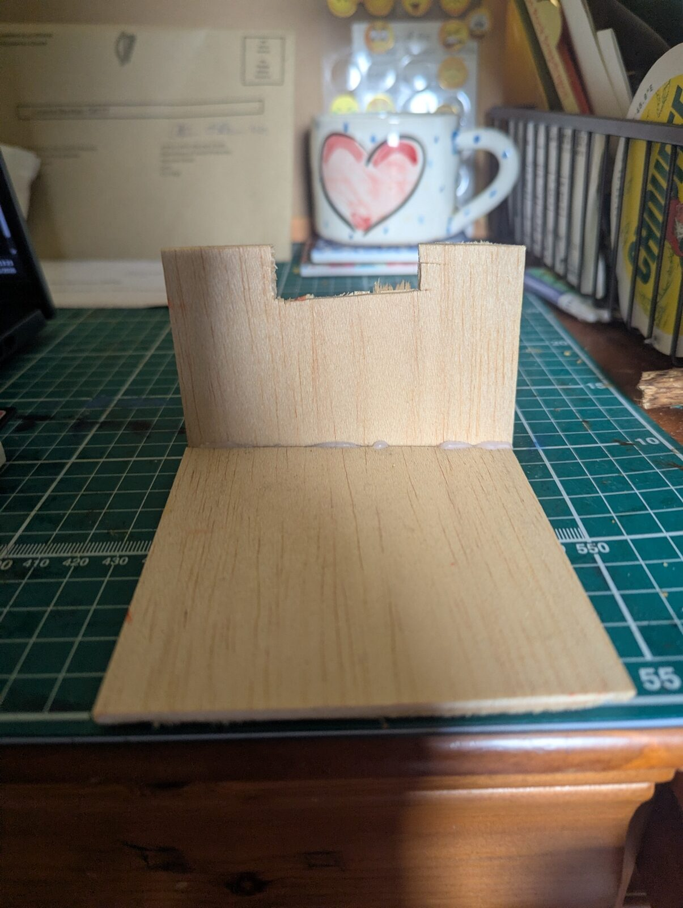
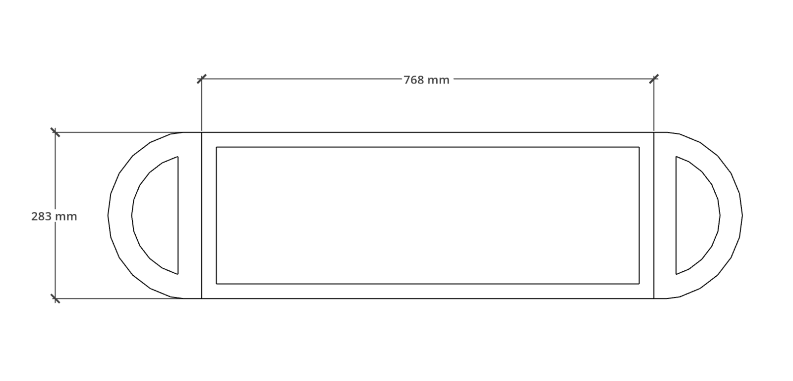
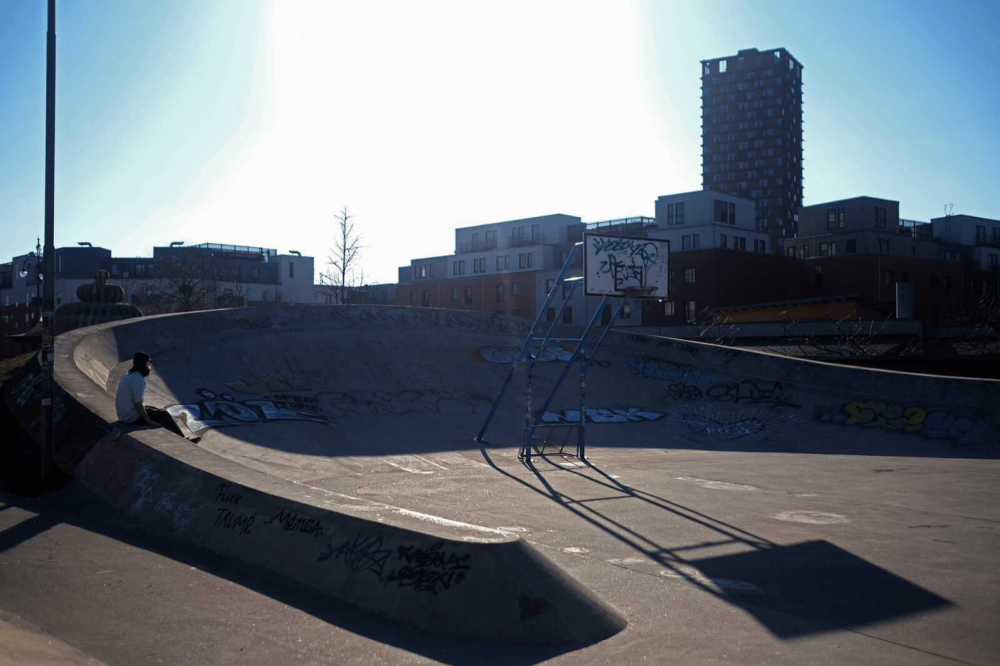

A portable seat for putting your butt on the city.
A portable seat designed for carrying your coffee and pastry — and then putting your butt on steps without feeling like you're going to get dirty.
By giving people the freedom to choose where they sit, the project introduces an element of play into everyday urban life, encouraging exploration and a deeper connection with the city.




